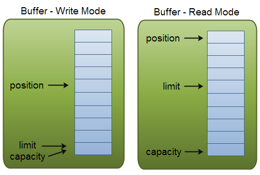

一个使用传统阻塞I/O的系统，如果使用一个请求对应一个线程这种模式，一旦有高并发的大量请求，就会有如下问题：
- 线程不够用, 就算使用了
线程池复用线程也无济于事; - 阻塞I/O模式下,会有大量的线程被阻塞，一直在等待数据,这个时候的线程被挂起，只能干等，
CPU利用率很低，换句话说，系统的吞吐量低; - 如果
网络I/O堵塞或者有网络抖动或者网络故障等，线程的阻塞时间可能很长，整个系统也变的不可靠;
关于NIO
java.nio全称java non-blocking IO（实际上是new io），是指JDK 1.4 及以上版本里提供的新api（New IO） ，为所有的原始类型（boolean类型除外）提供缓存支持的数据容器，使用它可以提供非阻塞式的高伸缩性网络。
HTTP2.0使用了多路复用的技术，做到同一个连接并发处理多个请求，而且并发请求的数量比HTTP1.1大了好几个数量级。
IO和NIO的区别
原始的IO是面向流的、阻塞的；
NIO是面向缓冲区的、非阻塞的；
阻塞I/O模型
- jdk1.4以前的IO模型，一连接对一个线程。
- 原始的IO是
面向流的，不存在缓存的概念。Java IO面向流意味着每次从流中读一个或多个字节，直至读取所有字节，它们没有被缓存在任何地方。此外，它不能前后移动流中的数据。如果需要前后移动从流中读取的数据，需要先将它缓存到一个缓冲区； - 原始的IO的各种流是
阻塞的，这意味着当一个线程调用read或write方法时，该线程被阻塞，直到有一些数据被读取，或数据完全写入，该线程在此期间不能再干任何事情了。
非阻塞I/O模型
- NIO是
面向缓冲区的：数据读取到一个它稍后处理的缓冲区，需要时可在缓冲区中前后移动，这就增加了处理过程中的灵活性。 - NIO的非阻塞模式
- 非阻塞读：一个线程从某通道发送请求读取数据，但是它仅能得到目前可用的数据，如果目前没有数据可用时，就什么都不会获取，而不是保持线程阻塞，所以直至数据变的可以读取之前，该线程可以继续做其他的事情。
- 非阻塞写：一个线程请求写入一些数据到某通道，但不需要等待它完全写入，这个线程同时可以去做别的事情。
- NIO是可以做到用一个线程来处理多个操作的。假设有10000个请求过来,根据实际情况，可以分配50或者100个线程来处理。不像之前的阻塞IO那样，非得分配10000个。
NIO网络通信的3个核心
- Channel通道：负责连接；
- Buffer缓冲区：负责数据的存取；
- Selector选择器：是SelectableChannel的多路复用器，用于监控SelectableChannel的IO状况；
Buffer缓冲区
- 缓冲区：在NIO中负责
数据的存取； - 缓冲区就是字节数组，存储不同类型的数据，根据数据类型不同（Boolean除外），提供相应类型的缓冲区
- ByteBuffer
- CharBuffer
- ShortBuffer
- InteBuffer
- LongBuffer
- FloatBuffer
- DoubleBuffer
Buffer核心操作方法
- allocate(capacity)：获取缓冲区，分配内存
- put(bytes)：存入数据
- get(dst,offset,len) ：获取数据
Buffer核心属性

- capacity,容量，表示缓冲区中最大存储数据的容量；
- limit,界限：表示缓冲区可以操作数据的大小；
- 在写模式下，缓冲区的limit表示你最多能往Buffer里写多少数据；
- 在读模式下，limit等于Buffer的capacity，意味着你还能从缓冲区获取多少数据。
- position,位置：表示缓存区中正在操作数据的位置；
- 当写数据到缓冲时，position表示当前待写入的位置，position最大可为capacity – 1；
- 当从缓冲读取数据时，position表示从当前位置读取。
- mark,标记：记录当前position的位置，可以通过reset()恢复到mark的位置；
0<=mark<=position<=limit<=capacity
直接缓冲区和非直接缓冲区
非直接缓冲区

- NIO通过通道连接磁盘文件与应用程序，通过缓冲区存取数据进行双向的数据传输。
- 物理磁盘的存取是操作系统进行管理的，与物理磁盘的数据操作需要经过内核地址空间；而我们的Java应用程序是通过JVM分配的缓冲空间。
- 数据需要在
内核地址空间和用户地址空间，在操作系统和JVM之间进行数据的来回拷贝，无形中增加的中间环节使得效率与后面要提的直接缓冲区相比偏低。 - 非直接缓冲区通过
allocate()方法分配缓冲区，将缓冲区分配在JVM内存的byte[]中；
直接缓冲区

- 直接缓冲区则不再通过
内核地址空间和用户地址空间的缓存数据的复制传递，而是在物理内存中申请了一块空间，这块空间映射到内核地址空间和用户地址空间； - 应用程序与磁盘之间的数据存取之间通过这块直接申请的物理内存进行；
- 直接缓冲区通过
allocateDirect()方法分配直接缓冲区，将缓冲区建立在操作系统内存中（通过Unsafe.allocateMemory(size)分配内存），即直接内存;
直接缓冲区的优点
性能更高、效率更快。
直接缓冲区可以通过FileChannel的map()方法将文件区域直接映射到内存中来创建，避免了在操作系统IO缓冲区和JVM的IO缓冲区之间的双向copy的成本；
直接缓冲区的缺点
- 不安全；
- 消耗更多，因为它不是在JVM中直接开辟空间。这部分内存的回收只能依赖于垃圾回收机制，垃圾什么时候回收不受我们控制；
- 数据写入物理内存缓冲区中，程序就失去了对这些数据的管理，即什么时候这些数据被最终写入从磁盘只能由操作系统来决定，应用程序无法再干涉。
直接缓冲区适合与数据长时间存在于内存，或者大数据量的操作时更加适合。
Buffer的选择
通常情况下，操作系统的一次写操作分为两步：
- 将数据从用户空间拷贝到系统空间。
- 从系统空间往网卡写。
同理，读操作也分为两步：
- 将数据从网卡拷贝到系统空间；
- 将数据从系统空间拷贝到用户空间。
对于NIO来说，缓存的使用可以使用DirectByteBuffer和HeapByteBuffer。
- 如果使用了DirectByteBuffer，一般来说可以减少一次系统空间到用户空间的拷贝。但Buffer创建和销毁的成本更高，更不宜维护，通常会用内存池来提高性能。
- 如果数据量比较小的中小应用情况下，可以考虑使用heapBuffer；反之可以用directBuffer。
Channel通道
- Channel由java.nio.channels包定义；
- Channel表示
IO源与目标打开的连接，在Java NIO中负责缓冲区中数据的传输，类似于传统IO的流； - Channel不能直接访问数据，只能
与Buffer进行交互；
Channel的主要实现类
java.io.channels.Channels接口，常用的有
- FileChannel：文件通道（阻塞模式），用于对文件进行读写；
- SocketChannel：TCP通道，用户TCP数据传输；
- ServerSocketChannel：用于服务端监听外部过来的TCP请求；
- DatagramChannel：UDP通道，用于监听UDP请求和发送UDP请求；
获取通道的方法
针对支持通道的类提供了
getChannel()方法本地IO操作
- FileInputStream/FileOutputStream；
- RandomAccessFile
网络IO操作
- Socket
- ServerSocket
- DatagramSocket
- JDK1.7中的NIO.2针对各个通道提供了一个
open()方法获取通道； - JDK1.7中的NIO.2的
Files#newByteChannel()获取通道；
通道的读写操作
- 读操作：将数据从Channel读取到Buffer中，进行后续处理，方法：
channel.read(buffer)； - 写操作：将数据从Buffer写入到Channel中，方法：
channel.write(buffer);
通道之间的数据传输
- 非直接缓冲区：读取
Channel进行复制（速度和缓冲区大小相关）； - 利用直接缓冲区复制文件：以
MappedByteBuffer进行复制； - 通道之间的数据传输：Channel的
transferTo或transferFrom进行复制； - File工具类：
Files.copy(src,tar,opt)调用操作系统接口进行复制（性能最优）；
具体实现代码见文件复制的单元测试代码TestChannel.java
分散（Scatter）与聚集（Gather）
- 分散读取（Scatter Reads）：将通道中的数据分散到多个缓冲区中；
- 聚集写入（Gather Writes）：将多个缓冲区中的数据聚集到通道中；
1 |
|
字符集（Charset）
- 编码：字符串2字符数组
- 解码：字符数组2字符串
1 |
|
Selector选择器
Selector建立在非阻塞的基础之上，经常说的的多路复用在java中指的就是selector，用于实现一个线程管理多个Channel。
选择器(Selector)
将通道注册到选择器上,并指定监听事件
- Selector.open()：开启Selector；
- channel.configureBlocking(false)：将通道设置为非阻塞模式，因为默认都是阻塞模式的；
- channel.register(selector,SelectionKeys)：注册方法返回值是 SelectionKey 实例，它包含了 Channel 和 Selector 信息，也包括了一个叫做
Interest Set的信息，即我们设置的我们感兴趣的正在监听的事件集合； - selector.select()：调用 select() 方法获取通道信息。用于判断是否有我们感兴趣的事件已经发生了。
选择键(SelectionKey)
- OP_ACCEPT：对应 00010000，接受 TCP 连接；
- OP_READ：对应 00000001，通道中有数据可以进行读取；
- OP_WRITE：对应 00000100，可以往通道中写入数据；
- OP_CONNECT：对应 00001000，成功建立 TCP 连接；
可以同时监听一个 Channel 中的发生的多个事件，比如我们要监听 ACCEPT 和 READ 事件，那么指定参数为二进制的 00010001 即十进制数值 17 即可。
Selector示例
服务端选择器绑定通道，根据选择键区分处理逻辑示例1
2
3
4
5
6
7
8
9
10
11
12
13
14
15
16
17
18
19
20
21
22
23
24
25
26
27
28
29
30
31
32
33
34
35
36
37
38
39
40
41
42
43
44
45
46
47
48
49
50/**
* 服务端
*
* @throws IOException
*/
void server() throws IOException {
//1.获取通道
ServerSocketChannel ssChannel = ServerSocketChannel.open();
//2.切换非阻塞模式
ssChannel.configureBlocking(false);
//3.绑定连接
ssChannel.bind(new InetSocketAddress(host, port));
//4.获取选择器
Selector selector = Selector.open();
//5.将通道注册到选择器上,并指定监听事件
ssChannel.register(selector, SelectionKey.OP_ACCEPT);
//6.轮询式的获取选择器上已经准备就绪的事件
while (selector.select() > 0) {
//7.获取当前选择器中所有注册的选择键（已就绪的监听事件）
Set<SelectionKey> selectionKeys = selector.selectedKeys();
Iterator<SelectionKey> iterator = selectionKeys.iterator();
while (iterator.hasNext()) {
SelectionKey selectionKey = iterator.next();
//8.获取准备就绪的事件
if (selectionKey.isAcceptable()) {
//9.若接收就绪，获取客户端连接
SocketChannel sChannel = ssChannel.accept();
//10.切换非阻塞模式
sChannel.configureBlocking(false);
//11.将该通道注册到选择器上
sChannel.register(selector, SelectionKey.OP_READ);
} else if (selectionKey.isReadable()) {
//获取当前选择器上读就绪状态的通道
SocketChannel schannel = (SocketChannel) selectionKey.channel();
ByteBuffer buf = ByteBuffer.allocate(1024);
int len = 0;
while ((len = schannel.read(buf)) != -1) {
buf.flip();
System.out.println(new String(buf.array(), 0, len));
buf.clear();
}
schannel.close();
}
//取消选择键SelectionKey
iterator.remove();
}
}
}
注意
- 使用NIO != 高性能，当连接数<1000，并发程度不高或者局域网环境下NIO并没有显著的性能优势。
- NIO并没有完全屏蔽平台差异，它仍然是基于各个操作系统的I/O系统实现的，差异仍然存在。使用NIO做网络编程构建事件驱动模型并不容易，陷阱重重。
- 推荐使用成熟的NIO框架，如Netty，MINA等。解决了很多NIO的陷阱，并屏蔽了操作系统的差异，有较好的性能和编程模型。